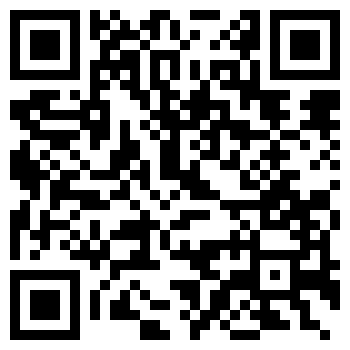
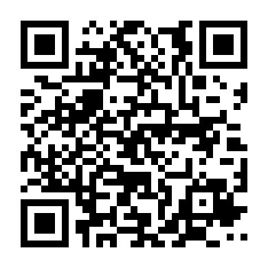
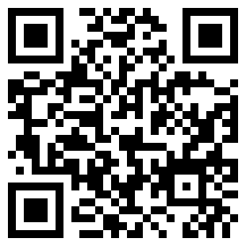
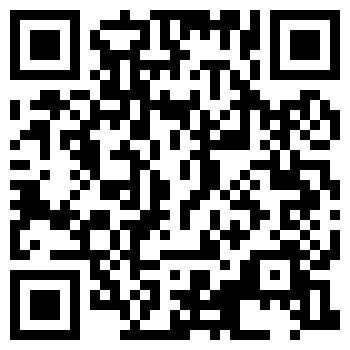

Sobre mim
eu nome é pedro,
apelido Dorzão, atualmente tenho 27 anos, sou nascido em Belo Horizonte – MG e atualmente moro em
Belém do Pará. mminha história com a tecnologia começa na infância, onde eu amava video-games, e
sonhava em um dia poder criar meu próprio jogo. Em 2011, tive meus primeiros contatos efetivos com um
computador. Realizei um curso básico de computação e digitação, no primeiro semestre DOSVOX e no
segundo virtual vision. Por volta de 2012 / 2013, conheci um software de pc chamado RPG Maker onde pude
dar início a minha vida de programador. Em 2016, fiz um curso técnico em informática com foco em
desenvolvimento de sistemas e software, e hoje, faço meus projetos pessoais e busco todos os dias por
novas oportunidades de projetos profissionais.
Na área acadêmica, além deste curso técnico de desenvolvimento, fiz universidade na área de
Gestão Pública. Aprendi por lá conceitos básicos de como se fazer uma boa gestão, seja ela no
setor público ou não, e compreendi diversos conceitos relacionados ao que é público e, de uma
maneira geral, quebrei muitos pré-conceitos.
Já na área profissional, ainda não tive minha primeira oportunidade com carteira
assinada mas, já fiz 2 estágios remunerados, e já prestei vários concursos públicos, tendo sido eu aprovado em
duas ocasiões.
Meu primeiro estágio foi na prefeitura de Belo Horizonte enquanto eu
fazia o ensino médio (2013 até 2014); era um estágio administrativo, eu trabalhava na gerência de estágios
(Gedese). Lá eu realizava atividades de atendimento ao público pelo telefone, também contatava candidatos
que não haviam preenchido todas as informações para que me informassem o que faltava, e assim eles pudessem
começar a concorrer a uma vaga de estágio. Já elaborei estratégias de melhoria no processo de recrutamento,
utilizando planilhas e filtragem, dentre outras tarefas.
Já o meu segundo estágio, que foi no CREA-MG (2015 a 2016), eu fiz concomitantemente com meu curso técnico. Lá eu realizava tarefas, na maioria das vezes, de suporte. Formatava computadores da organização, realizava acesso remoto nos computadores dos servidores das instalações, e de inspetorias e escritórios externos, trocava periféricos nos setores internos, etc. Com relação a concursos, já fiz vários, para auxiliar de justiça, técnico legislativo, agente bancário, etc. Os 2 que passei mas, que expiraram pela demora nas chamadas foram: um em 2017 para técnico em informática para a cidade de Três Corações – MG, e o outro foi para o cargo de digitador em 2018 em Belo Horizonte.

Na vida, já tive muitos nãos, alguns eu até tive justificativas / explicações,
outros não. Uma coisa que aprendi com o tempo é que todos temos dificuldades e limitações, que a vida não é fácil
para ninguém, que a pesar da desigualdade no mundo de recursos e oportunidades, temos a igualdade no tempo! O que
faz a diferença é como utilizamos o nosso tempo, ou seja, se uso meu tempo para subir na vida em vez de utilizá-lo
para me lamentar, com certeza estarei mais forte e mais preparado para as oportunidades futuras.
Em 2019, tive uma virada de chave em minha vida, até então, eu só utilizava o
sistema operacional Windows em meu desktop; linux eu só havia ouvido falar. Talvez pela falta de acessibilidade
(eu acreditava que linux não tinha acessibilidade), eu estava em um momento acomodado se é que posso dizer assim…
Naquele momento, conheci o trabalho de um blogger e entusiasta de tecnologia (Neymar Borges) – TTS Supremo, que
demonstrava em vídeos como o linux poderia ser acessível e até simples de mexer. Comecei a mexer, me apaixonei pelo
sistema, e hoje, só tenho distros linux em meu desktop principal.
Ainda em 2019, encontrei um propósito de vida que é:
Participar do processo de transformação do mundo na acessibilidade por meio da tecnologia.
No ano seguinte, entrei de cabeça para o grupo do tts, e desde lá, tento sempre ajudar no
que posso, pesquisando, testando, desenvolvendo scripts, e aprendendo com a comunidade.

Atualmente sou freelancer, desenvolvo aplicativos web e desktop, tenho familiaridade com as linguagens html/css, javascript, java, python, php, MariaDB… Não somente de forma individual, tenho prazer e facilidade de trabalhar em grupo, nos modelos de metodologias ágeis, com as ferramentas de produtividade tais como pdca e scrum.
Além dos trabalhos de desenvolvimento e tecnologia que são a minha paixão, realizo
trabalhos acadêmicos também. Nas disciplinas relacionadas a gestão, informática, exatas, linguística e até humanas.
Utilizo o padrão abnt e capricho muito em tudo que me proponho a fazer.
Realizo também edições simples de imagens tais como aplicação de filtros, remoção de
fundo, união de imagens, efeitos de transparência, e também crio logos simples e tumbmails para vídeos.
Dentro da área de edição, edito vídeos, corto os vácuos de som, adiciono imagens no meio
do vídeo, boto efeitos sonoros de memes no meio do vídeo também, dentre outras tarefas.
Tenho muita boa vontade de aprender tecnologias que não domino, então trabalhar com linguagens ou frameworks que eu desconheça, não seria um problema, e muito pelo contrário, seria desafiador e muito gratificante ir aprendendo na prática enquanto eu estivesse trabalhando.
Meus Projetos
Contato e Redes Sociais
ou acesse: https://www.linkedin.com/in/dorzao 
ou acesse: https://github.com/dorzao 
ou acesse: https://t.me/dorzao 
ou acesse: https://freelaweb.com/u/dorzao/ 